For the 3D Production for Virtual Reality module of my MSc at Glasgow Caledonian University, I scanned a real-world object with photogrammetry and took it through the full production pipeline: from photographs to a game-ready model in Unreal Engine and a watertight file for 3D printing.
- 3D Artist (Solo Project)
- Photographed, scanned and reconstructed the object.
- Cleaned, retopologised, unwrapped and baked the model.
- Prepared the STL and rendered the final scene.
Photogrammetry is unpredictable, and choosing the right object is the most important decision.
- Paper boat: A white object on a white background left the software unable to find the
edges, producing a mountain-like shape.
- Hat: A single colour and two concave surfaces caused misaligned, overlapping geometry.
- The shell: Natural colour bands, solid geometry and no reflective surfaces made it the
ideal subject. 124 photos with high overlap aligned on the first attempt.
- RealityCapture: Aligned the images, set a tight reconstruction region, and computed and
textured the mesh.
- Retopology: Reduced the model from 469,000 to 5,000 polygons while keeping its ridges and
curvature.
- UV & Baking: A clean two-island UV unwrap, then baked the high-poly colour and detail onto
the low-poly mesh.
- 3D Printing: Added thickness, capped the holes and passed the STL check: clean and
watertight.
- Result: The final baked model stayed very close to the original scan and holds up well at
close range in Unreal Engine.
- Next time: I would capture more angles from below, add a normal map for the ridges and
choose a more complex subject to explore more of 3ds Max.
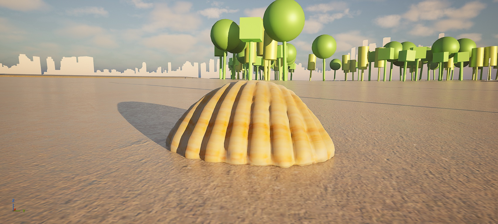
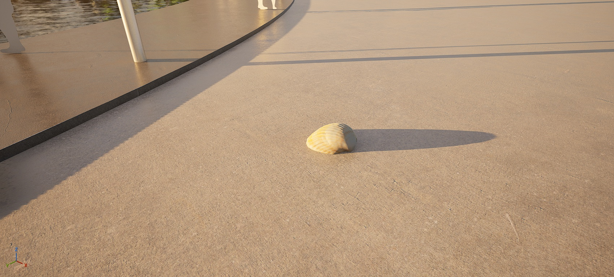
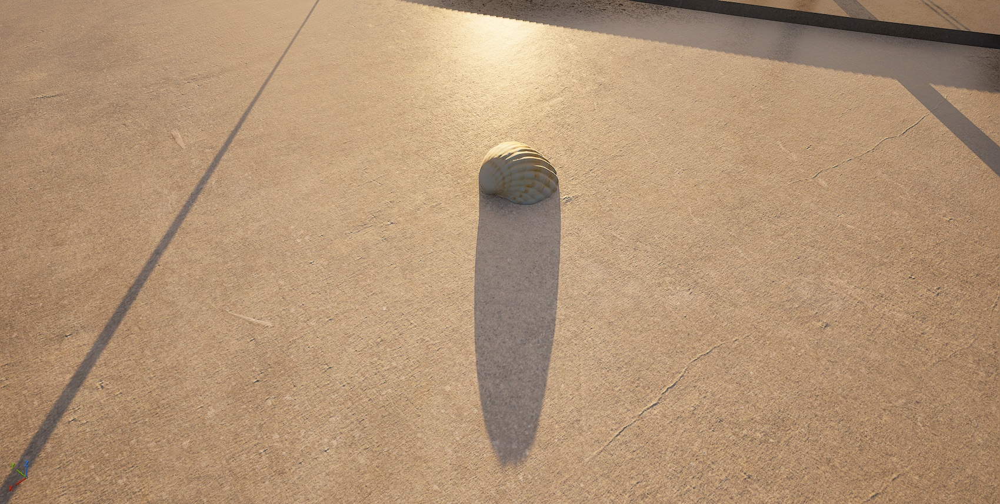
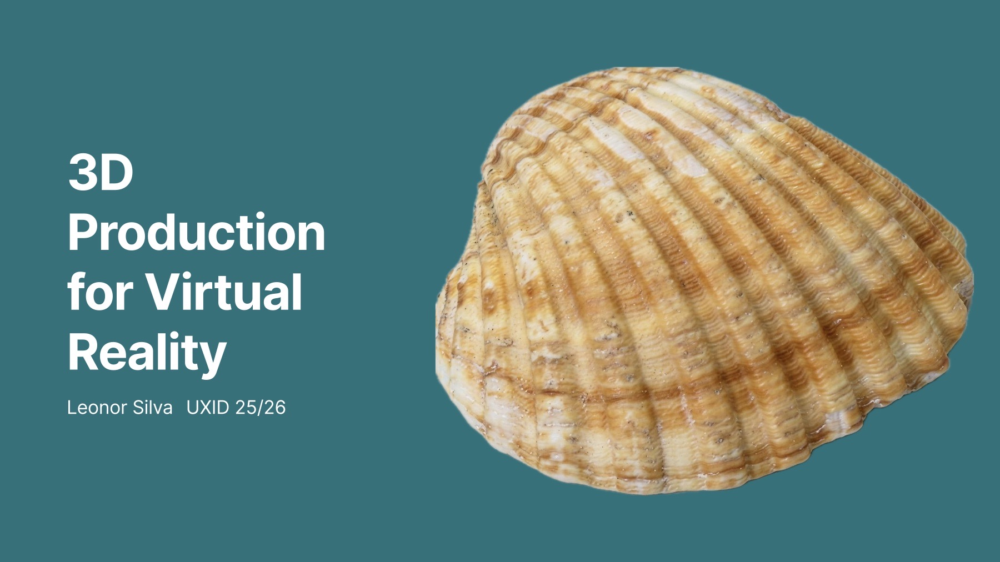
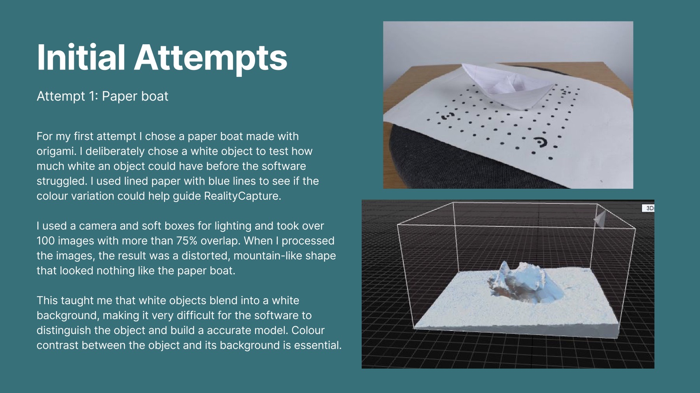
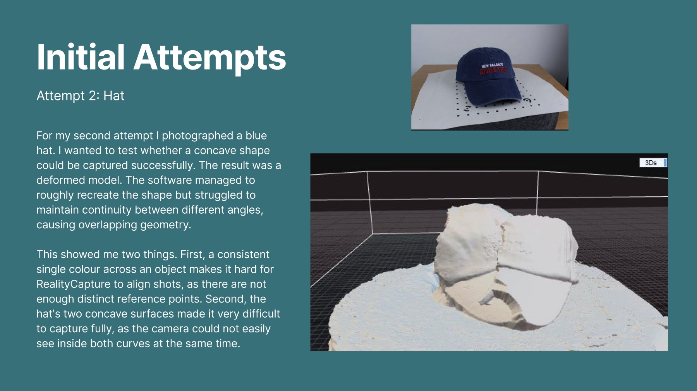
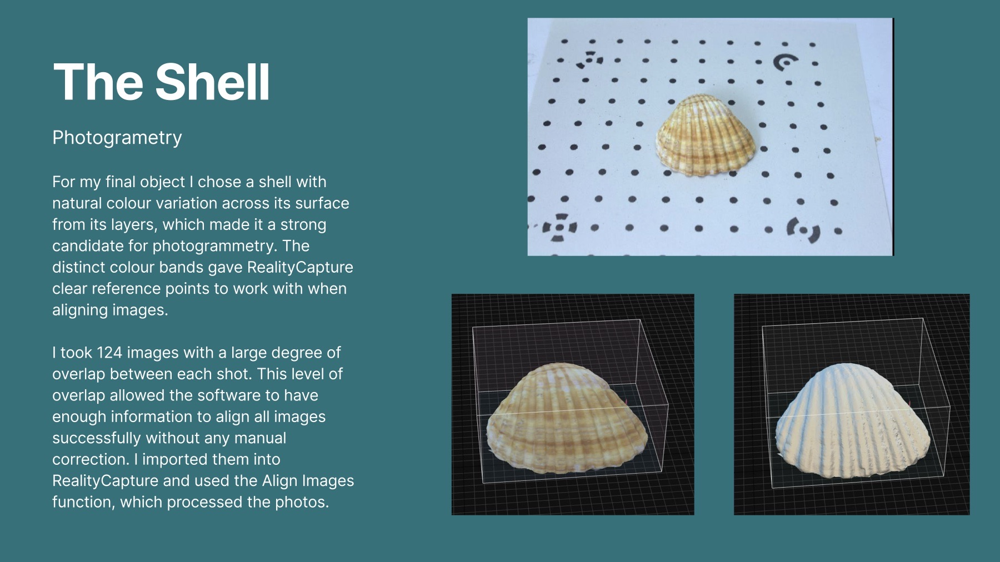
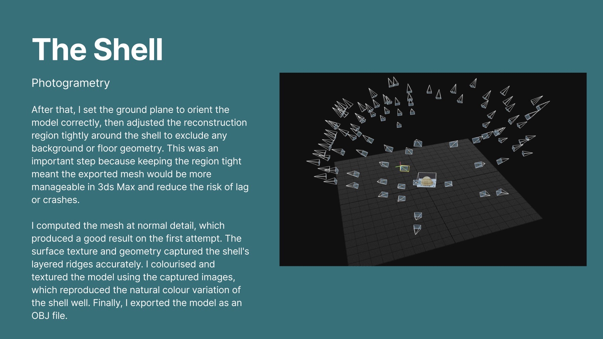
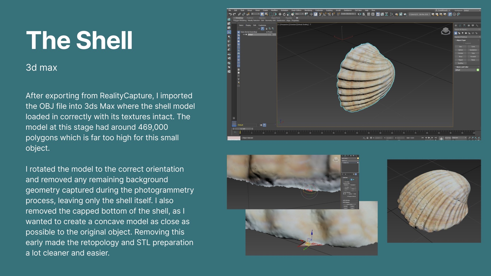
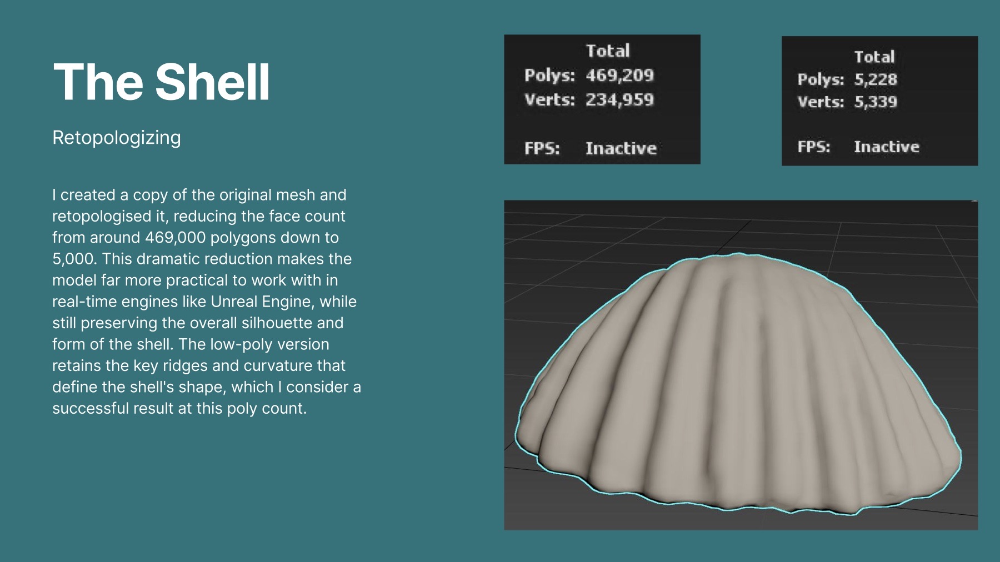
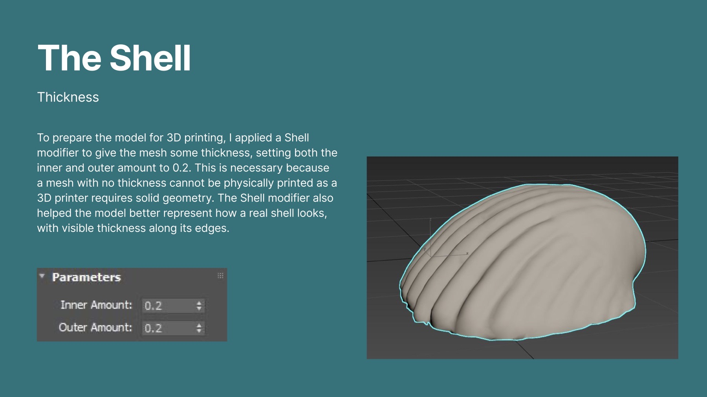
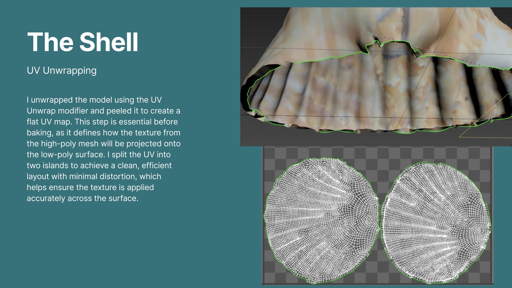
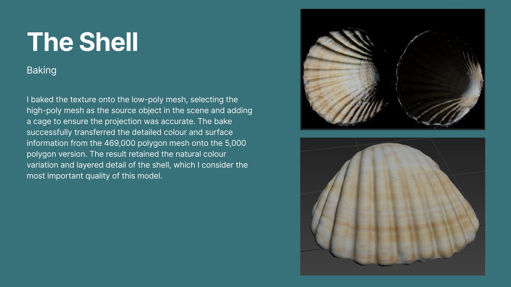
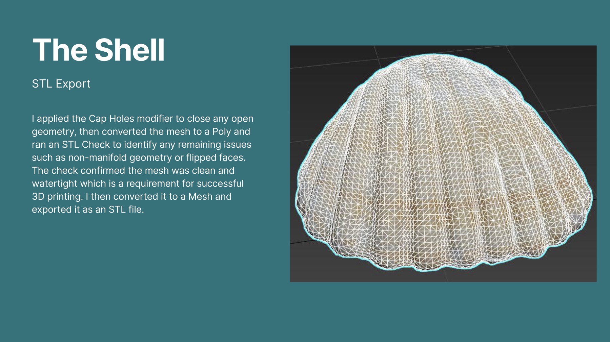
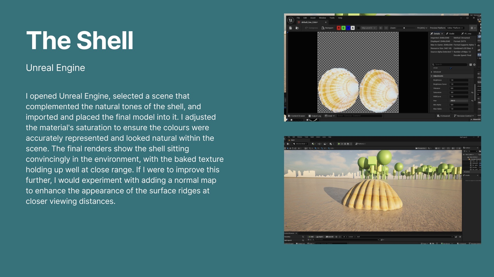